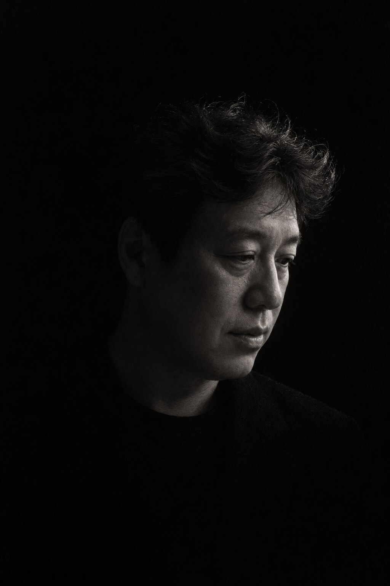

제주를 걸으며 만난 사람과 삶의 기록.원문과 집필 배경, 핵심 의미와 예상 질문을 함께 담은 저자 해설판입니다.
총 27장 · 원문과 저자 해설

양용호는 제주 조천읍 와산리에서 태어났다. 대한항공 제주공항 지상직으로 30년을 일했고, 제주대학교에서 관광학 박사학위를 받았다. 마흔세 개 읍·면·동을 78일 동안 걸으며, 풍경보다 사람을 관광보다 삶을 기록했다.